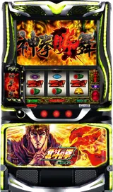

通常時の回転数とAT初当り回数から設定1〜6の可能性を推定。天破の刻や上部ランプの白点灯・白点滅を足したり、トロフィー・ランプで絞り込んだりできます
2026年1月導入の「スマスロ 北斗の拳 転生の章2」のページです。2023年導入の「スマスロ北斗の拳」（無印）とは別の機種です。無印はこちら。
通常時から当たったAT（神拳勝舞）を1回と数えます。AT中の継続は含めません。回転数は通常時のみ（AT中のゲーム数は含めない）。初当り確率↗
AT初当り回数（と、追加で入れた項目）の二項分布の尤度から、設定ごとの相対的な可能性をベイズ的に算出しています（事前は一様、示唆にチェックした場合は当てはまらない設定を0%に）。あべし天井やモードの影響を受けるため、回転数が少ないうちはブレが大きくなります。統計的な目安であり、実際の設定を保証するものではありません。
入れなくても判別できます。数えたものだけ開いて入力すると、判別済みの結果に自動で反映されます。
見えたものがある項目を開いてチェック。「〇以上濃厚」に当てはまらない設定を計算から外します。
設定示唆の解説を見る（1geki）↗絞り込み：なし（設定1〜6すべてで計算）
| 設定 | AT初当り(1/n) | 天破の刻(1/n) | 機械割% |
|---|
| 設定 | 中央ランプ 白点灯% | 白点滅% |
|---|
解析サイトの公開値です（2026年10月16日時点）。AT初当りは設定1と6で約1.3倍、天破の刻は約1.2倍の差です。設定3と4の間で大きく変わります（AT 1/336.3→1/298.7）。天破の刻の設定6は1/81.3（1geki・altema・DMM）と1/81.8（パチセブン）で食い違いがあり、多数の1/81.3にしています。